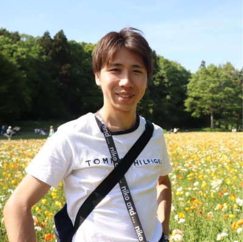

Yuki Kawawaki
I am currently a 3rd-year Ph.D. student in the High-Speed and Flexible Robot Laboratory at The University of Tokyo. My research interests include human–robot collaboration, high-speed processing, and robot dexterous manipulation.

Yuki Kawawaki
PhD in Mechanical Engineering
The University of Tokyo
Email · GitHub · LinkedIn · ResearchGate
About
I am a researcher in robotics and intelligent systems, currently affiliated with the High-Speed and Flexible Robot Laboratory at the University of Tokyo. My work focuses on combining high-speed perception, robot control, and learning-based approaches to enable robust human–robot collaboration in dynamic environments.
My research spans multiple object tracking, skeleton tracking, collision-free path planning, reinforcement learning, model predictive control, and dexterous robotic manipulation. I am particularly interested in building robotic systems that can perceive, reason, and act quickly and safely alongside humans.
Demonstration Videos
Education
The University of Tokyo
PhD in Mechanical Engineering
The University of Tokyo
M.S. in Mechanical Engineering
The University of Tokyo
B.S. in Mechanical Engineering
Imperial College London
Visiting Student, Personal Robotics Lab
University of California, Berkeley
Visiting Student, MSC Lab
The University of Sheffield
English Learning Program
Experience
Robotics Intern — Zeals, Omakase Robotics, Japan
Robotics Intern — OMRON SINIC X, Japan
Research Assistant — Tokyo University of Science, Japan
Research Intern — Hitachi, Ltd., Japan
Software Intern — WALC Inc., Japan
Research Assistant — The University of Tokyo, Japan
Research Areas
Topics
Human–robot collaboration, intelligent robotics, high-speed processing
Computer Vision
Multiple object tracking, skeleton tracking, deep learning
Robot Control
Collision-free path planning, reinforcement learning, MPC, hybrid position/force control
Selected Publications
International Journal Papers (3)
International Conferences (2)
Japanese Journal (1) and Conferences (7)
- Journal of the Robotics Society of Japan (2025): Real-time Collision Avoidance in Dynamic Environments Using a High-speed Skeleton Tracking Method and Velocity Potential Method
- ROBOMECH2026: Human–Robot Collaborative Long Rope Turning via Two-Stage Imitation and Residual Policy Learning (To appear)
- SI2025: Real-Time Tracking of Pitching Motion Using High-Speed Vision
- ROBOMECH2025: Controller Design Using Reinforcement Learning for Cooperative Long Rope Turning with Human and Robot Arm
- SI2024: Latest Image Generation from Time-Series Images Using a Deep Learning Model and Its Application to Laser Analysis — Excellent Speaker
- SI2024: Implementation and Performance Evaluation of Electrical Stimulation Feedback Control Based on High-Speed Vision for One-Degree-of-Freedom Upper Arm Rotational Motion
- RSJ2024: Real-Time Collision Avoidance in Dynamic Environments Using a High-Speed Skeleton Tracking Method and Velocity Potential Method
- RSJ2023: Real-Time Catching with Trajectory Prediction Based on Deep Learning-Based Object Detection and High-Speed Tracking
Awards
- 2025 IEEE International Conference on Cyborg and Bionic Systems — Best Cyborg Award Finalist
- 2025 Outstanding Student Award, Physical AI Program, Matsuo–Iwasawa Laboratory, The University of Tokyo
- 2024 Excellent Presentation Award, System Integration Division (SI2024), SICE
Skills
Programming
C/C++, Python, MATLAB
Systems & Tools
Windows, WSL, Linux, ROS2, Docker, Git
Machine Learning
Libtorch, PyTorch, TensorFlow, Scikit-learn
Simulation
PyBullet, MuJoCo
Robotics Platforms
Universal Robots
Hardware
SOLIDWORKS, 3D Printer
English
IELTS: 7.0 · TOEIC: 905/990
Hobbies
Marathon, Soccer
Contact
Email: kawawaki-yuki628@g.ecc.u-tokyo.ac.jp
GitHub: github.com/yukitiec
LinkedIn: linkedin.com/in/yuki-kawawaki-43a152369
ResearchGate: ResearchGate Profile
Laboratory: Yamakawa Laboratory